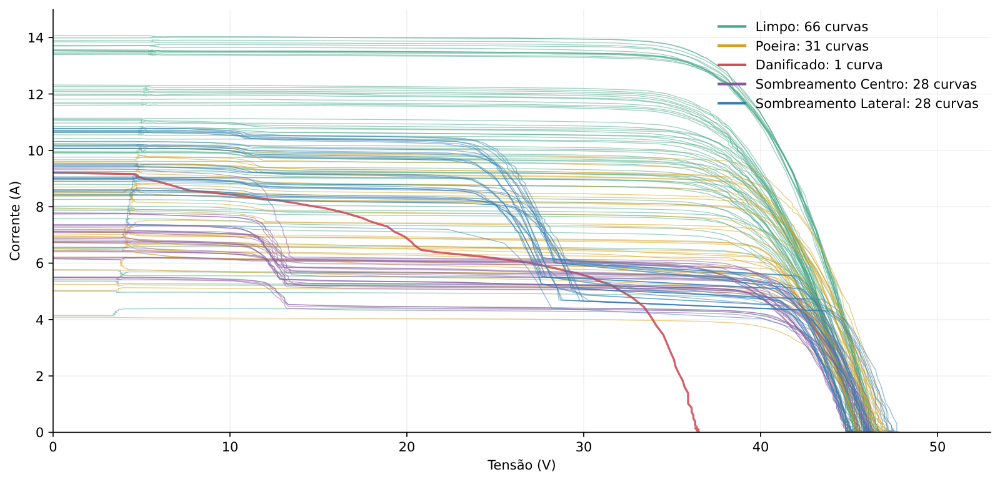
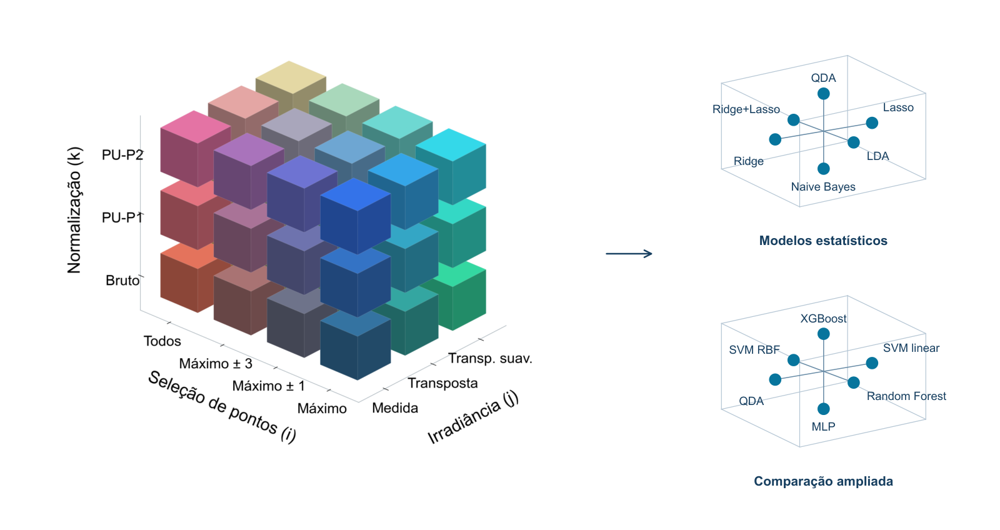

Portfólio / IA e fotovoltaica
Energia, pesquisa e tecnologiaO que uma curva elétrica revela sobre um módulo solar?
Corrente e tensão carregam sinais das condições de operação. O TCC investiga como representar essas medições e comparar modelos para reconhecer cinco classes operacionais.
01 / Problema físico
Da medição à condição de operação.
Uma curva corrente-tensão, ou I-V, descreve a resposta elétrica de um módulo fotovoltaico. Mudanças na condição de operação alteram essa assinatura. O desafio é reconhecer padrões sem confundir observações semelhantes da mesma unidade experimental com evidência independente.
O trabalho usa uma campanha previamente adquirida e rotulada. Minha participação está no tratamento dos dados, na escolha das representações, na comparação dos modelos e na interpretação dos resultados.
154 curvas completas e 36 registros pontuais de máxima potência. São 13.896 registros na referência de novembro de 2026. As classes são limpo, poeira, danificado, sombreamento central e sombreamento lateral. O suporte é desigual: a classe danificado reúne uma curva completa e 36 registros pontuais de máxima potência.
02 / Método
A validação começa na organização dos dados.
Cada ponto mantém sua unidade experimental para que a divisão dos dados respeite o agrupamento.
As 36 configurações, identificadas por BT, combinam escolhas de preparação e representação da informação elétrica.
A comparação inclui métodos estatísticos e modelos baseados em árvores, como XGBoost, avaliados dentro de protocolos definidos.
No protocolo LOCO, do inglês Leave One Curve Out, uma unidade inteira é reservada para teste. Pontos dessa unidade não entram no treinamento correspondente.
03 / Exploração visual
Duas formas de olhar o experimento.
As curvas mostram o sinal físico. O cubo organiza o espaço de configurações comparadas. As imagens preservam as cores e as proporções das figuras acadêmicas.

Curvas I-V do acervo do TCC. A variação na forma das curvas motiva a comparação de representações e classificadores.

Organização das configurações de entrada. BT identifica uma combinação de escolhas, não uma nova unidade experimental.
04 / Resultado e interpretação
Um resultado forte dentro de um recorte definido.
No recorte final, a configuração BT[2,1,0] com XGBoost XGB17 obteve 190 de 190 unidades classificadas corretamente no protocolo LOCO. A avaliação por ponto, nesse recorte, registrou 1.108 acertos em 1.114 pontos.
BT[2,1,0] combina a região de máxima potência com até três pontos de cada lado, irradiância transposta e grandezas brutas. A previsão por unidade é obtida pela média das probabilidades dos pontos disponíveis. As duas contagens respondem a perguntas diferentes. Ele não transforma cada ponto em um novo experimento independente.
O resultado pertence à seleção e avaliação interna da campanha estudada. Não demonstra 100% de acerto em campo, generalização para outros módulos ou um sistema instalado de monitoramento em tempo real.
O avanço seguinte é testar novas campanhas, módulos e condições de aquisição, mantendo a separação entre treino e teste e examinando erros por classe. Esta página oferece uma síntese pública e exploração das figuras, sem simular diagnósticos.